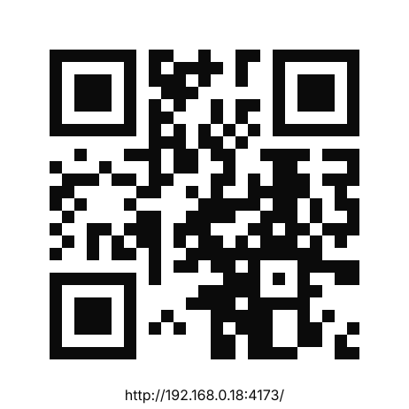

<!doctype html><html lang="ru"><meta charset="utf-8"><meta name="viewport" content="width=device-width,initial-scale=1"><title>QR для Ирины</title><style>body{margin:0;min-height:100vh;display:grid;place-items:center;background:#f5f5f5;font-family:Inter,Arial,sans-serif;color:#0b0b0b}.card{max-width:560px;padding:24px;text-align:center}.qr{width:min(86vw,460px);height:auto;border-radius:20px;box-shadow:0 18px 60px rgba(11,11,11,.12)}p{color:#555;line-height:1.45}</style><main class="card"><h1>QR для Ирины</h1><p>Откроет приложение по адресу <strong>http://192.168.0.18:4173/</strong> в домашней Wi‑Fi сети.</p></main></html>